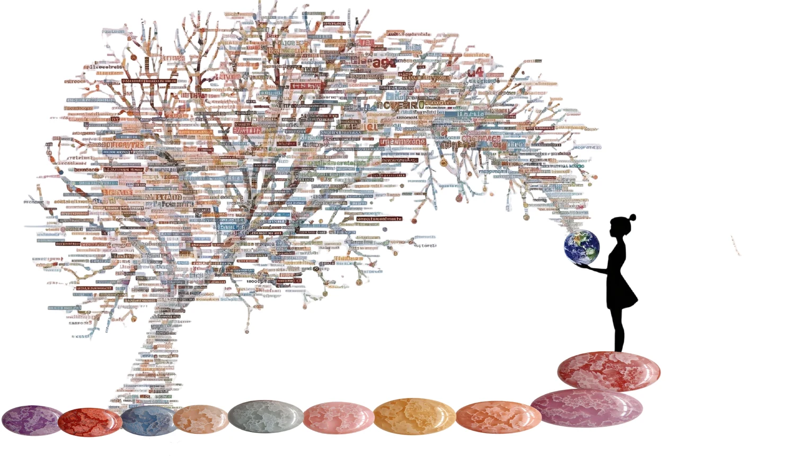

01
Stratégia a dizajn
Vytváram weby, ktoré pôsobia premium, sú jasné v komunikácii a odrážajú hodnotu značky.
Freelance Web Developer & Digitálna Manažérka
Navrhujem a programujem rýchle, bezpečné a prehľadné webové stránky od základu — v čistom HTML5, CSS3 a JavaScripte, s vlastným PHP backendom a dôrazom na technické SEO. Okrem kódu sa starám aj o celý digitálny chod projektu — hosting, doménu, e-mailing aj online prezentáciu.
luciadanielova1@gmail.com +421 952 590 547 GitHub (otvorí sa na novej karte)
O mne
Volám sa Lucia a od januára 2024 pôsobím ako freelance webová vývojárka a digitálna manažérka. Weby staviam „na kolene" od úplného základu — bez CMS, v čistom HTML5, CSS3 a JavaScripte, s vlastnými PHP skriptami na spracovanie objednávok, ochranu formulárov (honeypot, rate limiting) a sanitizáciu vstupov. Okrem samotného kódu mám na starosti aj kompletnú správu projektu: doménu a DNS, hosting, SSL certifikáty, e-mail marketing, Google profil firmy aj technické SEO.
K webu som sa nedostala klasickou cestou. Predtým som pracovala ako geodetka v teréne, digitalizovala mapy pre Geodetický a kartografický ústav Bratislava, niekoľko rokov som bola IT technička a správkyňa systémov, skúsila som si aj pozíciu trader brokera a popri tom aj rôzne brigády a prevádzkové pozície. Táto rôznorodá prax ma naučila rýchlo sa prispôsobiť, samostatne riešiť problémy a ísť si za výsledkom — presne to dnes zúročujem pri práci s klientmi a ich webovými projektmi.
Zaujímam sa o novinky vo webových technológiách, kybernetickej bezpečnosti a automatizácii procesov a priebežne ich nasadzujem do vlastných projektov.

Prístup
01
Vytváram weby, ktoré pôsobia premium, sú jasné v komunikácii a odrážajú hodnotu značky.
02
Rýchle, bezpečné a čisté riešenia bez zbytočných nástrojov, ale s vysokou funkčnosťou.
03
Správa hostingu, domény, SEO, e-mailingu a ďalších nástrojov, aby web fungoval aj po nasadení.
Úroveň pri každej zručnosti vychádza z môjho reálneho pracovného nasadenia.
Denne využívam AI nástroje na zrýchlenie vývoja, textov aj grafiky pri klientskych projektoch.
Projekty
Klientský projekt
Kompletná komerčná webová stránka postavená od základu – čisté HTML5/CSS3/JavaScript, vlastný PHP 8 backend na spracovanie objednávok s honeypot ochranou a rate limitingom, mobile-first dizajn v Tailwind CSS, technické SEO a nastavenie DNS, hostingu aj e-mailu.
Pracovné skúsenosti
Jan 2024 – súčasnosť Aktuálne
Freelance (vlastná činnosť)
Tvorba komerčných webov od nuly v HTML5/CSS3/JavaScripte s vlastným PHP 8 backendom, Tailwind CSS pre mobile-first dizajn a JSON-LD štruktúrovanými dátami. Správa DNS a hostingu cez WebSupport, SSL certifikátov, FTP nasadenia, technického SEO cez Google Search Console, e-mail marketingu v MailerLite a firemného Google profilu.
Feb 2024 – Nov 2024
SQZ s.r.o.
Práca popri rozbiehajúcom sa freelance podnikaní vo webovom vývoji.
Jan 2021 – Aug 2022
Geodetika s.r.o.
Terénne geodetické zameriavania a spracovanie nameraných dát.
Jan 2021 – Jan 2022
Geodetický a kartografický ústav Bratislava
Digitalizácia a spracovanie katastrálnych máp.
Jan 2017 – Jan 2020
Ing. Gaál
Správa počítačových systémov a technická podpora používateľov.
Jan 2016 – Jún 2018
Etx Capital
Obchodovanie na finančných trhoch a práca s klientmi.
Jan 2013 – Jan 2017
Jan 2010 – Sep 2012
Geodetika s.r.o., Bratislava I
Zameriavanie a spracovanie geodetických podkladov.
Okrem toho mám skúsenosti aj z ďalších brigád a pozícií – ako opatrovateľka v senior centre, pomocný personál v nemocnici, predavačka (TERNO, Malina s.r.o.) a krupierka/barmanka. Táto prax ma naučila zodpovednosti, komunikácii s ľuďmi a spoľahlivosti, ktoré uplatňujem aj dnes v práci s klientmi.
Kontakt
Máte nápad na projekt, alebo hľadáte niekoho na správu vášho webu? Ozvite sa mi.